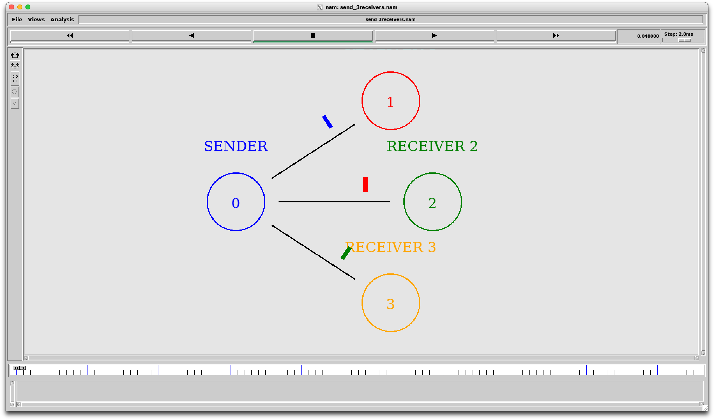

01 / WORKSPACE
Keep your simulations close.
Your Tcl files live in ~/NS2Nam/simulations on macOS and appear at /simulations inside the container.
A tidy Docker workspace for NS-2 and NAM on Apple Silicon. Write a Tcl scenario, run it, and watch packets travel.
A LEGACY TOOLCHAIN, MADE APPROACHABLE
NS-2 is a discrete-event network simulator. NAM turns its trace output into an animation you can inspect. This project packages both tools in a Docker environment and connects the NAM window to XQuartz on your Mac.
See how the environment fits together ↗Your Tcl files live in ~/NS2Nam/simulations on macOS and appear at /simulations inside the container.
The included example connects one sender to three receivers.

Run the sample ↗Start the interactive environment from Terminal.
ns2THE SHORT VERSION
READY WHEN YOU ARE